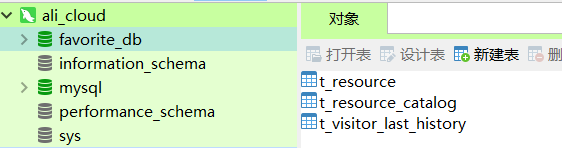
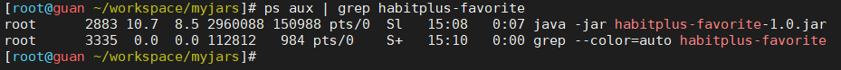
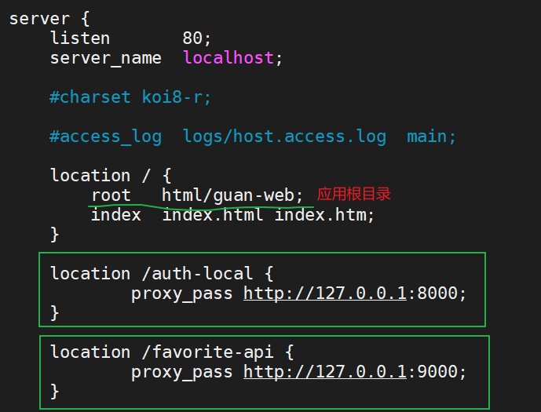
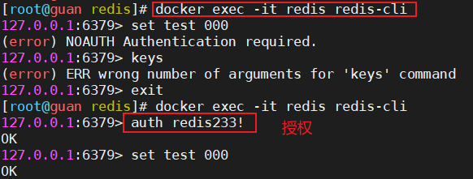

本文档是记录使用阿里云服务器搭建自己的网站和应用的使用记录
系统：Centos7.6
内核：3.10.0-1160.49.1.el7.x86_64
# 1. 配置 PS1 及命令别名
在自己的家目录下的 .bashrc 文件里添加：
| |
| alias rm='rm -i' |
| alias cp='cp -i' |
| alias mv='mv -i' |
| alias cls='clear' |
| |
| |
| PS1="[\[\e[36;40m\]\u@\[\e[31;40m\]\h \[\e[33;40m\]\w\[\e[0m\]]\$ " |
运行一下该文件：
# 2. 安装 jdk8
# 2.1 官网下载 jdk8
- 清华大学镜像：OpenJDK
- Oracle 官网，需登录：OracleJDK
# 2.2 解压
| tar -zxvf [压缩包] -C [解压目录] |
# 2.3 配置环境变量
vim /etc/profile，在最后添加以下内容：
| JAVA_HOME=[解压后的jdk根目录] |
| PATH=${JAVA_HOME}/bin:$PATH |
| export JAVA_HOME PATH |
运行 profile 文件：
# 3. 安装 docker 容器
参考链接： https://www.cnblogs.com/yufeng218/p/8370670.html
安装 docker 需要使用 root 权限
| sudo yum remove docker docker-common docker-selinux docker-engine |
- 安装需要的软件包， yum-util 提供 yum-config-manager 功能，另外两个是 devicemapper 驱动依赖的
| sudo yum install -y yum-utils device-mapper-persistent-data lvm2 |
| sudo yum-config-manager --add-repo https://download.docker.com/linux/centos/docker-ce.repo |
- 可以先查看所有仓库中所有 docker 版本，并选择特定版本安装
| yum list docker-ce --showduplicates | sort -r |
| |
| sudo yum install docker-ce |
| sudo systemctl start docker |
| sudo systemctl enable docker |
# 4. 使用 docker 安装 mysql
docker 命令参考：https://www.runoob.com/docker/docker-command-manual.html
| docker search mysql |
| docker pull mysql |
| docker iamges |
| |
| docker run mysql[:版本号，默认为最新版] -itd --name mysql -p 3306:3306 -e MYSQL_ROOT_PASSWORD=[你的密码] |
| |
| docker ps |
| |
| docker exec -it mysql bash |
| |
| |
| mysql -u root -p |
| |
| |
| create user '用户名'@'%' identified by '用户密码'; |
| |
| grant all on *.* to '用户名'@'%' identified by '用户密码'; |
| |
| flush privileges; |
- 至此，就可以通过【本机的 ip + 3306 端口 + 远程登录用户和密码】就能远程连接 MySQL 了！

# 5. 运行 jar
| nohup java -jar [你的jar包] > [输出文件（日志）] 2>&1 & |
2>&1 解释：

查看输出文件：

# 6. 安装 nginx
nginx 服务器是一个轻量级的、操作方便，可实现正向和反向代理，基本每个开发者都不会陌生的一个 web 服务器。本文以压缩包安装为例！
官网：https://nginx.org/en/
中文文档：https://www.nginx.cn/doc/
# 6.1 安装
# 6.2 配置
配置代理，找到配置文件 /etc/nginx/nginx.conf ，找到 server 模块：

# 6.3 相关命令
| |
| systemctl restart/start/stop/status nginx |
| |
| nginx -s reload |
| |
| nginx -s reopen |
| |
| nginx -s reload |
| |
| nginx -s stop |
| |
| nginx -s quit |
| |
| nginx -t |
| |
| nginx -?,-h |
| |
| nginx -v |
| |
| nginx -V |
| |
| nginx -t |
| |
| nginx -T |
| |
| nginx -q |
| |
| nginx -p prefix |
| |
| nginx -c filename |
| |
| nginx -g directives |
| |
| killall nginx |
# 6.4 可能遇到的问题
- 能访问 index 页面，根据路由也进入下一个页面，但是在路由到的页面上刷新会出现 404，需要在 nginx 配置文件中加入，通过路由进行导航：
| server { |
| listen 80; |
| listen [::]:80; |
| server_name _; |
| root /usr/share/nginx/html/guan-web; |
| **try_files $uri $uri/ /index.html;** --- 防止刷新页面出现404 |
| |
| |
| include /etc/nginx/default.d/*.conf; |
| |
| location /auth-local { |
| proxy_pass http://127.0.0.1:8000/; |
| } |
| |
| location /favorite-api { |
| proxy_pass http://127.0.0.1:9000/; |
| } |
| |
| error_page 404 /404.html; |
| location = /404.html { |
| } |
| |
| error_page 500 502 503 504 /50x.html; |
| location = /50x.html { |
| } |
| } |
# 7. 使用 docker 安装 redis
参考链接：https://cloud.tencent.com/developer/article/1670205
redis 官网：http://www.redis.cn/
| |
| docker pull redis |
| |
| docker run -p 6379:6379 --name redis -v /usr/local/soft/redis/redis.conf:/etc/redis/redis.conf -v /usr/local/soft/redis/data:/data -d redis redis-server /etc/redis/redis.conf --appendonly yes |
| |
| docker logs redis |
| |
| docker exec -it redis redis-cli |

bind 127.0.0.1 #注释掉这部分，使redis可以外部访问
daemonize no #用守护线程的方式启动
requirepass 你的密码 #给redis设置密码
appendonly yes #redis持久化 默认是no
tcp-keepalive 300 #防止出现远程主机强迫关闭了一个现有的连接的错误 默认是300
# 8. 配置 jar 包启动 | 关闭 | 重启的 shell 脚本
启动脚本在开发和测试阶段还是很方便的，可大大提升开发效率，因为这样可以不用每次提交代码后去手动敲复杂的启动命令
| #!/bin/bash |
| |
| APP_NAME=guan-auth-1.0.jar |
| |
| CLASS_LIB_PATH=/root/workspace/myjars/lib/ |
| JAR_PATH=/root/workspace/myjars/auth |
| OUT_FILE=/root/workspace/logs/auth/guan-auth.out |
| |
| |
| usage() { |
| echo "Usage: sh 脚本名.sh [start|stop|restart|status]" |
| exit 1 |
| } |
| |
| |
| is_exist(){ |
| pid=`ps -ef|grep $APP_NAME|grep -v grep|awk '{print $2}' ` |
| |
| if [ -z "${pid}" ]; then |
| return 1 |
| else |
| return 0 |
| fi |
| } |
| |
| |
| start() { |
| is_exist |
| if [ $? -eq "0" ]; then |
| echo "${APP_NAME} is already running. pid=${pid} ." |
| else |
| |
| nohup java -Dloader.path=$CLASS_LIB_PATH -jar $JAR_PATH/$APP_NAME > $OUT_FILE 2>&1 & |
| echo "${APP_NAME} start success" |
| fi |
| } |
| |
| |
| stop() { |
| is_exist |
| if [ $? -eq "0" ]; then |
| kill -9 $pid |
| else |
| echo "${APP_NAME} is not running" |
| fi |
| } |
| |
| |
| status() { |
| is_exist |
| if [ $? -eq "0" ]; then |
| echo "${APP_NAME} is running. Pid is ${pid}" |
| else |
| echo "${APP_NAME} is NOT running." |
| fi |
| } |
| |
| |
| restart() { |
| stop |
| start |
| } |
| |
| |
| case "$1" in |
| "start") |
| start |
| ;; |
| "stop") |
| stop |
| ;; |
| "status") |
| status |
| ;; |
| "restart") |
| restart |
| ;; |
| *) |
| usage |
| ;; |
| esac |
| |
| |